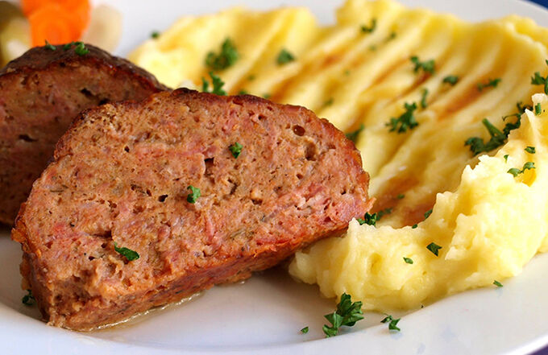

Sekaná s bramborovou kaší

Description:
Rychlé jídlo, které dáte do péct do trouby a nestaráte se. Jako přílohu volíme bramborovou kaši. Dobrou chuť!
Ingredients:
- vepřové plece
- hovězího předního masa
- anglické slaniny
- česnek
- sůl, pepř
- vejce + žloutek
Steps
- Maso si necháme pomlet u řezníka, nebo tak učiníme sami doma. Přidáme veškeré koření i ostatní ingredience, řádně propracujeme a v uzavřené nádobě necháme přes noc v lednici.
- Druhý den hmotu znova rukama řádně propracujeme a podle potřeby dochutíme solí, případně přidáme strouhanku.
- Pekáček vymažeme sádlem a namočenýma rukama vytvarujeme dvě šišky. Bílek s kapkou studené vody rozšleháme a mašlovačkou potřeme sekanou.
- odlejeme trochou vody a pečeme v troubě na 180 st. cca hodinu. Během pečení doléváme dle potřeby vodu a výpekem poléváme. Podáváme s bramborovou kaší.